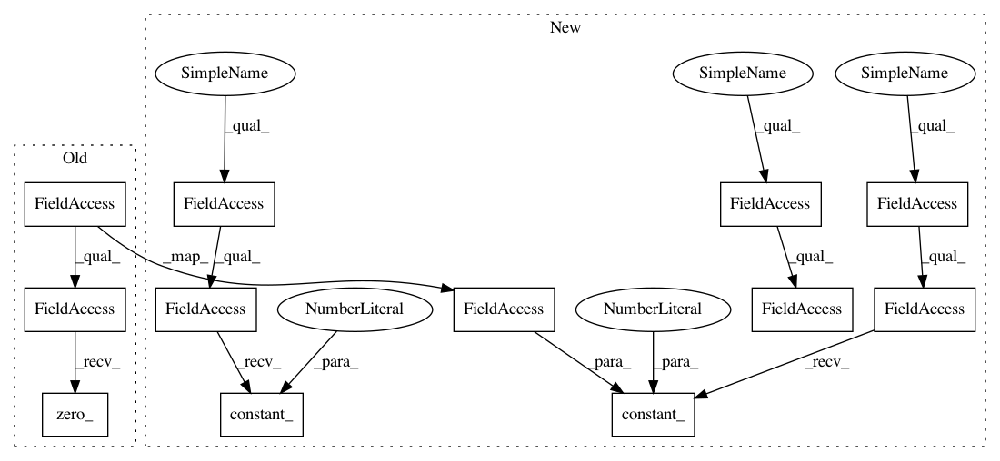

7a90d38920857d0155f3cbbfd36d1f5cb91e8eba,models/densenet.py,DenseNet,__init__,#DenseNet#Any#Any#Any#Any#Any#Any#Any#Any#,143
Before Change
m.weight = nn.init.kaiming_normal(m.weight, mode="fan_out")
elif isinstance(m, nn.BatchNorm3d) or isinstance(m, nn.BatchNorm2d):
m.weight.data.fill_(1)
m.bias.data.zero_()
// Linear layer
self.classifier = nn.Linear(num_features, num_classes)
After Change
m.weight, mode="fan_out", nonlinearity="relu")
elif isinstance(m, nn.BatchNorm3d):
nn.init.constant_(m.weight, 1)
nn.init.constant_(m.bias, 0)
elif isinstance(m, nn.Linear):
nn.init.constant_(m.bias, 0)
def forward(self, x):
features = self.features(x)
out = F.relu(features, inplace=True)
In pattern: SUPERPATTERN
Frequency: 3
Non-data size: 12
Instances
Project Name: kenshohara/3D-ResNets-PyTorch
Commit Name: 7a90d38920857d0155f3cbbfd36d1f5cb91e8eba
Time: 2018-10-30
Author: kensho.hara@aist.go.jp
File Name: models/densenet.py
Class Name: DenseNet
Method Name: __init__
Project Name: kenshohara/3D-ResNets-PyTorch
Commit Name: 7a90d38920857d0155f3cbbfd36d1f5cb91e8eba
Time: 2018-10-30
Author: kensho.hara@aist.go.jp
File Name: models/densenet.py
Class Name: DenseNet
Method Name: __init__
Project Name: mapillary/inplace_abn
Commit Name: 4a53e30fafdd8c65c42d0cf978312e6333182db4
Time: 2018-05-21
Author: lorenzo@mapillary.com
File Name: modules/bn.py
Class Name: InPlaceABNSync
Method Name: reset_parameters
Project Name: mapillary/inplace_abn
Commit Name: 4a53e30fafdd8c65c42d0cf978312e6333182db4
Time: 2018-05-21
Author: lorenzo@mapillary.com
File Name: modules/bn.py
Class Name: InPlaceABN
Method Name: reset_parameters